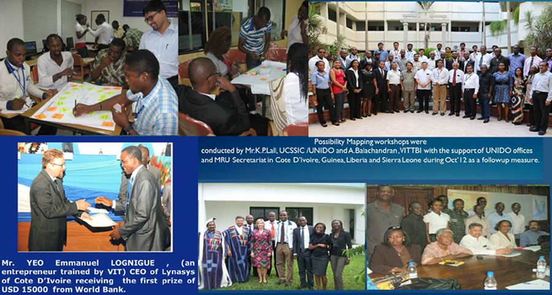
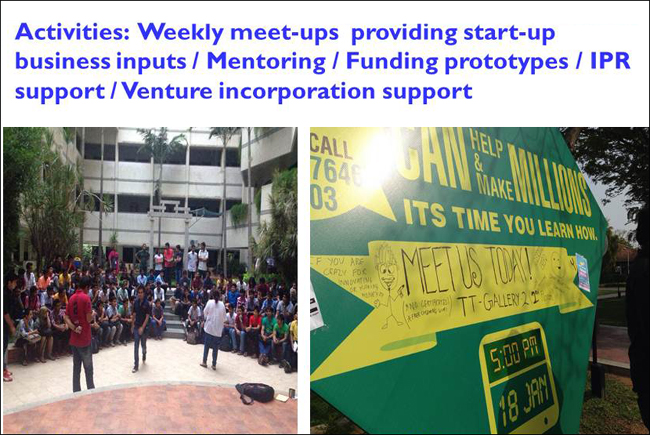
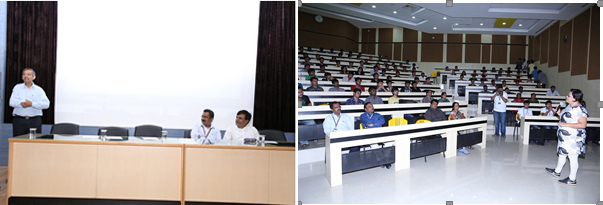

infoDev is an agency Founded and Supported by The World Bank Group. In 2006, VIT-TBI became a member of infoDev network containing around 102 organisation from 63 countries. The association with infoDev helped VITTBI to accelerate its incubation process by carrying out the activities such as Identification Camps in Chennai and Coimbatore to reach out to innovations at large, an Accelerated Business Coaching Program to a group of 16 prospects, incubation and Seed Fund Support to selected projects. An International Networking Conference for dissemination of knowledge and building linkages with incubators in overseas was organized in 2007.
Student Nodal Partnership with L-RAMP/Villgro led to contests “My Idea Programme” within the institute and several institutes in the neighbourhood involving about 3000 students and generated about 1500 ideas. VITTBI has been the hub for these MIPs in the region.
This programme also supported Innovative student projects by funding to the tune of Rs. 13 lakhs for about 50 projects and the same was facilitated through VITTBI.
VIT-TBI has been one of the Outreach centres of the Technopreneur Promotion Programme (TePP) operated by the Department of Scientific and Industrial Research (DSIR) which began functioning in the year 2006 until 2013. TePP has been a novel programme to extend financial support to students and independent innovators for converting their innovative ideas into working prototypes / models. The support was extended in two phases, innovation incubation and enterprise incubation. VIT-TBI supported 29 projects to the tune Rs. 80 lakhs. Innovators were sourced through various channels like the Entrepreneurship forums, TePP Counseling sessions, newspaper advertisements and walk-ins. Few faculty and students were also beneficiaries of this programme.
VITTBI was one of few Incubators selected under the scheme ‘Entrepreneurial and Managerial Development of SME’s through Incubators” by the Ministry of Micro, Medium and Small Enterprises (MSME) of Govt. of India. Incubatees were eligible for a support of up to Rs. 6 lakhs under this program and eleven of the incubatees were beneficiaries of this grant.
VIT-TBI was one of the Technology Commercialization and Facilitators (TCF) identified by TIFAC, Govt. of India with a mandate to assist innovators by providing techno-market support to indigenously innovative technologies towards their commercialization through their Technology Refinement and Marketing Assistance Programme (TREMAP). VITTBI supported 8 projects in different phases as in market research, patent search etc., and facilitated one technology transfer by standing as an interface between the independent innovator and the Industry.
A 3-month in-house Youth Entrepreneurship Skills Development Initiative for 24 West African nationals from Cote D’Ivoire, Guinea, Liberia and Sierra Leone was conducted by VIT-TBI along with VIT Business School with the support from UCSSIC, UNIDO. The objective of the training was to equip potential entrepreneurs with basic business management skills and facilitate them to develop business plans. The participants were provided extensive inputs on Entrepreneurship, Opportunity Identification & Evaluation, Marketing, Promotion, Finance, Human Resource Management, Business Modeling and Planning and were taken on industry visits. The outcome of the programme saw 10 business ventures and 3 incubators being set up in West Africa apart from several hundred individuals getting trained in Entrepreneurship through these participants.
Watch the UNIDO Project Movie & testimonials: VIT-TBI associated with VS Prudence Advisors and has been providing grants to innovative student projects. Students with technology ideas have been facilitated grants to develop their prototype, test, refine, create IP and make it market ready.
VS Prudence Advisors is an advisory, mentoring and consultancy firm involved in the development of startup businesses for the past 8 years. The company helps entrepreneurs, guides them and mentors them with an aim to turn them into profitable and self-sustainable businesses. Prudence provides a whole array of startup services including fundraising to startups.
The Blueprints Club (TBC) is a joint initiative by VIT-Technology Business Incubator and by VS Prudence Advisors Pvt. Ltd. with an aim to reach out to students in the country and help them develop their ideas into startups. With weekly meetings, the aspiring student entrepreneurs are taken closer to their goals of setting up their own venture. TBC functions in two tracks, the Runway and Takeoff. Runway is for students, who are still not clear about what a startup entails and what they might have do so to get a startup up and running; but are nevertheless interested in starting up. Take-Off is for students who have figured out what they wish to do and need to take the next step from the prototypes/models that they may have already built. TBC offers guidance in terms of developing a business model around the product that they have already developed. These sessions will have a more focused and result oriented agenda.
VITTBI, in association with TATA Elxsi's Incub@TE program and V.S Prudence Advisors launched a Startup Connect program. A curtain raiser event for VIT students was organized on 13th September, 2013. Mr. Praveen Jhajaria of Incub@TE, Ms.Salma Moosa & Mr. Vivek Srinivasan of V.S. Prudence Advisors and Mr. A. Balachandran, General Manager, VITTBI addressed the participants on the Startup ecosystem in general and about the Startup Connect program in particular. 31 Business plans from various student teams were received. 10 finalists were invited to present before a jury comprising members from Tata Elxsi, Prudence, VITTBI and Winfin Technologies. Mr.Rajesh Kumar,Vice President of Tata Elxsi and Mr.Raghavendra Prasad,CEO of Wifin Technologies addressed the participants during the Finals event held on 19th October 2013. Three winning teams were awarded prizes, and all the 10 teams would receive mentoring from VITTBI, V.S. Prudence Advisors and Tata Incub@TE
VIT has partnered with an open innovation program ICICI’s Trinity 2013 & 2014 launched by India’s largest private sector bank ICICI that promotes innovation and entrepreneurship among the youth. VIT is among the select few institutions to partner with ICICI and this would provide opportunities from idea to commercialization stage. “Customer Service and online solutions” submitted by one of the student teams from VIT was shortlisted for the ICICI Trinity 2013 Idea Presentation Round. Team Technovators,Team Vijaya and Team AI from VIT University won the Team Award under the Prototype presentation round in 2013, 2014 and 2015.